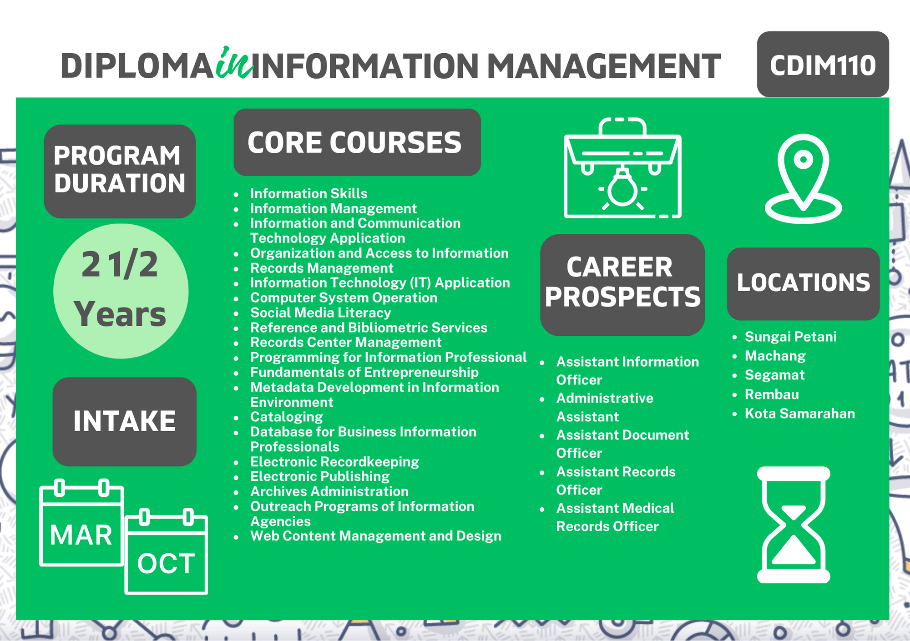
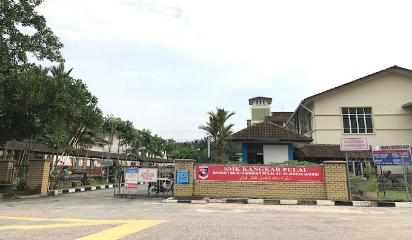

My Education Background
| Year | Education Background |
|---|---|
2022 - Present

|
Universiti Teknologi MARA (Campus Segamat)

 Currently studying a Diploma in Information Management from the Faculty of Computing, Informatics, and Mathematics (CDIM110). The graduates are trained to gain knowledge and skills in information literacy, information handling, information communication, technology application management, and other related information and knowledge management tasks. The core courses in this study comprised library literacy, records management, IT skills, and multimedia. Click here for more information: |
2017 - 2021

|
Sekolah Menengah Kebangsaan Kangkar Pulai
 Field of Study in Principle of Accounting. Learn the fundamentals of accounting, including trial balance, ledger, and books of original entry. |
2014 - 2016

|
Sekolah Kebangsaan Kangkar Pulai 2


|